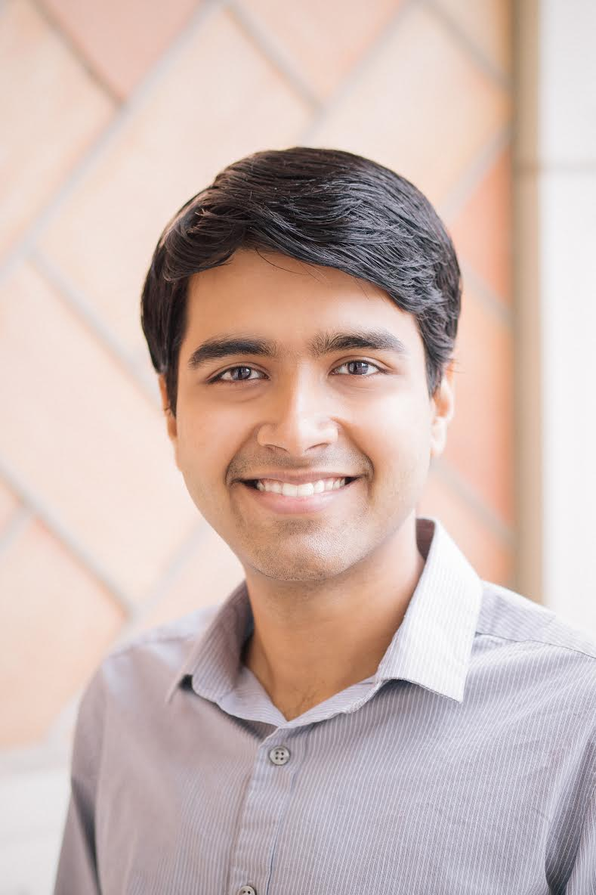

Swarun Kumar
Assistant Professor, Electrical and Computer Engineering
Carnegie Mellon University
Carnegie Mellon University
Office: CIC Rm. 4102,
4720 Forbes Ave., Pittsburgh, PA 15213
Email: swarun [at] cmu [dot] eduAssistant: Dawn Sienko,
Email: dsienko [at] andrew [dot] cmu [dot] edu
Phone: (412)-268-9192
I am an Assistant Professor at Carnegie Mellon University's ECE department, with a courtesy appointment in the CS department. My research builds next-generation wireless network protocols and services. I lead the Emerging Wireless Technologies (WiTech) lab at CMU. I am a recipient of the NSF CAREER award and Google Faculty Research award. I received the George Sprowls Award for best Ph.D thesis in Computer Science at MIT and the President of India gold medal at IIT Madras.
NEWS
- Two papers at MobiCom 2020: mm-Wave and Joltik!
- Check out our RFID Tatoo paper at UbiComp 2020 and smart materials work at ACS Applied Materials & Interfaces
- Osprey wins Best Paper Honorable Mention and Best Demo at MobiSys 2020!
- QuAiL wins Best Paper Award at IPSN 2020 - explores new ways to rapidly track wildfires
- Akshay Gadre receives the Best Presentation Award at IPSN 2020 PhD forum
- Two new papers: Osprey and OPR accepted at MobiSys 2020
- Jingxian Wang receives the Microsoft Ph.D. Fellowship
- Thank you NSF for the CAREER award!
- Gave a talk on future wireless at TEDxPittsburgh!
- [More news...]
SELECTED PUBLICATIONS
- Joltik: Enabling Energy-Efficient "Future-Proof" Analytics on Low-Power Wide-Area Networks, Mingran Yang, Junbo Zhang, Akshay Gadre, Zaoxing Liu, Swarun Kumar and Vyas Sekar, MobiCom 2020 [PAPER] [WEBSITE]
- Osprey: A mmWave Approach to Tire Wear Sensing, Akarsh Prabhakara, Vaibhav Singh, Swarun Kumar and Anthony Rowe, MobiSys 2020 (Best Paper Honorable Mention) [PAPER] [SLIDES] [WEBSITE]
- A Cloud-Optimized Link Layer for Low-Power Wide-Area Networks, Artur Balanuta, Nuno Pereira, Swarun Kumar and Anthony Rowe, MobiSys 2020 [PAPER] [WEBSITE]
- Quick (and Dirty) Aggregate Queries on Low-Power WANs, Akshay Gadre, Fan Yi, Anthony Rowe, Bob Iannucci and Swarun Kumar, IPSN 2020 (Best Paper Award) [PAPER] [WEBSITE]
- Millimeter-Wave Full Duplex Radios, Vaibhav Singh, Susnata Mondal, Akshay Gadre, Milind Srivastava, Jeyanandh Paramesh and Swarun Kumar, MobiCom 2020 [PAPER] [WEBSITE]
- Frequency Configuration for Low-Power Wide-Area Networks in a Heartbeat, Akshay Gadre, Revathy Narayanan, Anh Luong, Swarun Kumar, Anthony Rowe and Bob Iannucci, NSDI 2020 [PAPER] [WEBSITE]
- RFID Tattoo: A Wireless Platform for Speech Recognition , Jingxian Wang, Chengfeng Pan, Haojian Jin, Vaibhav Singh, Yash Jain, Jason Hong, Carmel Majidi and Swarun Kumar, UbiComp 2020 [PAPER] [WEBSITE]
- You foot the bill! Attacking NFC with passive relays, Yuyi Sun, Swarun Kumar, Shibo He, Jiming Chen and Zhiguo Shi, IEEE IoT Journal 2020 [WEBSITE]
- Silver-Coated PDMS Beads for Soft, Stretchable, and Thermally Stable Conductive Elastomer Composites , Chengfeng Pan, Yun Sik Ohm, Jingxian Wang, Michael J. Ford, Kitty Kumar, Swarun Kumar, and Carmel Majidi, ACS applied materials and interfaces 2019
- Sozu: Self-Powered Radio Tags for Building-Scale Activity Sensing , Yang Zhang, Yasha Iravantchi, Haojian Jin, Swarun Kumar, and Chris Harrison, UIST 2019 [PAPER] [WEBSITE]
- Perspective: eliminating channel feedback in next generation cellular networks , Deepak Vasisht, Swarun Kumar, Hariharan Rahul and Dina Katabi, ACM SIGCOMM CCR 2019
- Software Defined Cooking using a Microwave Oven , Haojian Jin, Jingxian Wang, Swarun Kumar and Jason Hong, MobiCom 2019 (ACM GetMobile Research Hightlight) [PAPER] [SLIDES] [WEBSITE]
- On the Feasibility of Wi-Fi Based Material Sensing , Diana Zhang, Jingxian Wang, Junsu Jang, Junbo Zhang, Swarun Kumar, MobiCom 2019 [PAPER] [SLIDES] [WEBSITE]
- Pushing the Range Limits of Commercial Passive RFIDs , Jingxian Wang, Junbo Zhang, Rajarshi Saha, Haojian Jin, Swarun Kumar, NSDI 2019 [PAPER] [WEBSITE]
- Revisiting Software Defined Radios in the IoT Era , Revathy Narayanan, Swarun Kumar, HotNets 2018
- WiSh: Towards a Wireless Shape-aware World , Haojian Jin, Jingxian Wang, Zhijian Yang, Swarun Kumar, Jason Hong, MobiSys 2018 [PAPER] [WEBSITE]
- Charm: Exploiting Geographical Diversity Through Coherent Combining in Low-Power Wide-Area Networks , Adwait Dongare, Revathy Narayanan, Akshay Gadre, Artur Balanuta, Anh Luong, Swarun Kumar, Bob Iannucci, Anthony Rowe, IPSN 2018 (Best Paper Award) [PAPER] [WEBSITE]
- A Deep Learning Approach to IoT Authentication , Rajshekhar Das, Akshay Gadre, Shanghang Zhang, Swarun Kumar and Jose Moura, ICC 2018 [PAPER] [WEBSITE]
- Towards Wearable Everyday Body-Frame Tracking , Haojian Jin, Zhijian Yang, Swarun Kumar, and Jason Hong, UbiComp 2018 (Best Demo Honorable Mention) [PAPER] [SLIDES] [WEBSITE]
- Empowering Low-Power Wide Area Networks in Urban Settings , Rashad Eletreby, Diana Zhang, Swarun Kumar, and Osman Yagan, SIGCOMM 2017 [PAPER] [SLIDES] [WEBSITE]
- Eliminating Channel Feedback in Next-Generation Cellular Networks , Deepak Vasisht, Swarun Kumar, Hariharan Rahul and Dina Katabi, SIGCOMM 2016 (Best Paper Award, GetMobile Research Highlight)
- Decimeter-Level Localization with a Single WiFi , Access Point, Deepak Vasisht, Swarun Kumar and Dina Katabi, NSDI 2016
TEACHING
- 18-441/741 (Computer Networks), Spring 2018-20
- 18-859G (Wireless Networks and Mobile Systems -- DARPA SC2 Edition), Fall 2017-19
- 18-345 (Intro to Telecommunication Networks), Spring 2017
- 18-859F (Wireless Networks and Mobile Computing), Spring 2016
Ph.D STUDENTS
- Diana Zhang
- Haojian Jin (co-advised with Prof. Jason Hong)
- Akshay Gadre
- Jingxian Wang
- Vaibhav (co-advised with Prof. Osman Yağan)
- Akarsh Prabhakara (co-advised with Prof. Anthony Rowe)
- Junbo Zhang (co-advised with Prof. Soummya Kar)
- Atul Bansal (co-advised with Prof. Bob Iannucci)